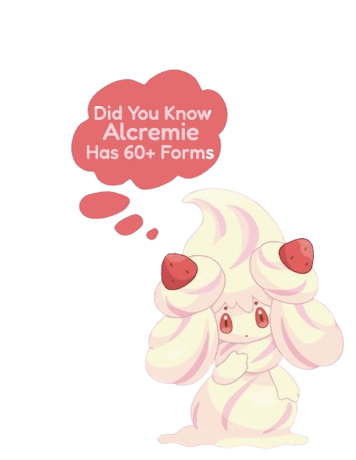

Alcremie is a Fairy-type Pokémon first introduced in Pokémon Sword and Shield, native to the enchanting Galar region. Known for her soft, whipped-cream body and charming dessert-like appearance, Alcremie quickly became a fan favorite for her adorable looks and sweet personality. She is a Pokémon made entirely of cream and confections, and while she may seem gentle, she has powerful abilities that make her strong in battles too.
Alcremie is the evolved form of Milcery, but her evolution is unlike any other Pokémon. The way a trainer spins, the direction, the time of day, and the type of sweet Milcery holds all come together to create a specific Alcremie form. Because of this unique evolution process, there are many Alcremie forms, each with its own color and topping combination—making her one of the most visually diverse Pokémon in the entire franchise.
This Pokémon is often found in peaceful places like fields and gardens, spreading calm energy wherever she goes. Alcremie is said to share some of her cream with trainers she trusts, which is described as delicious and filled with soothing energy. She symbolizes friendship, comfort, and creativity, which is why so many trainers love raising her. Whether you're admiring her many forms or using her strategic strengths in battle, Alcremie is a Pokémon that truly brings joy and charm to every team.
